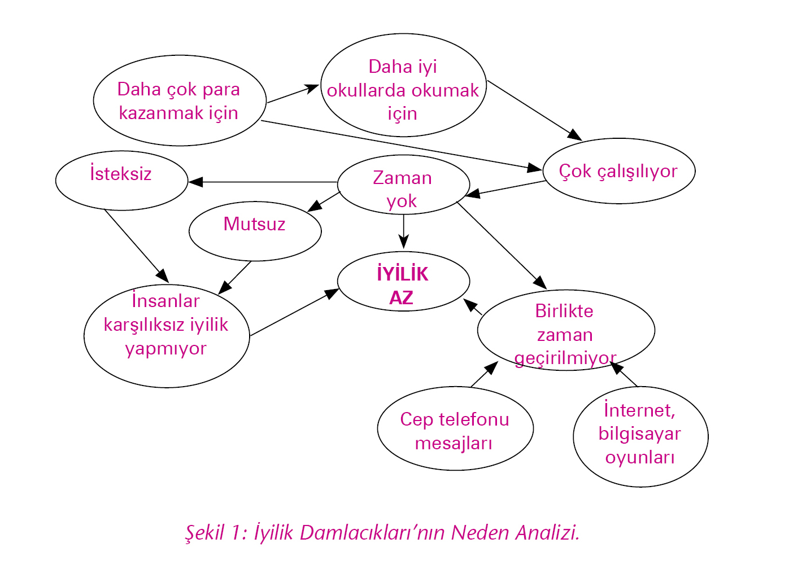

Dünya bir karmaşa içindeydi. Bu öyle bir karmaşaydı ki, insanlar bu karmaşanın farkına varacak zaman bile bulamıyorlardı. Yaşamı sağlayan kaynaklar hızla tükeniyordu. Diğer canlılara yaşam olanağı tanımamanın sonucunda, insanoğlu kendi yaşam olanaklarını da yok ediyordu.
Herkes koşturuyordu. Daha çok şeye sahip olmak için daha çok çalışıyordu, konuşmaya, sohbete, zamanları yoktu. Arkadaşların yerini bilgisayarlar almıştı. Kitapçılar kapanmıştı. Kimse okumuyor, hayal kurmuyor ve sevmiyordu. İnsanlar içine düştükleri yalnızlığı daha çok şeye sahip olma hırsıyla gidermeye çalışıyorlardı.
Gençler yalnızlıklarını marka kıyafetlerde, uyuşturucuda, içkide, bilgisayar oyunlarında veya gürültülü partilerde gidermeye çalışırken, ebeveynleri onları gelecekte daha çok şeye sahip olmaları için çok çalışmaya, en iyi okullarda okumaları için yaşıtlarından daha başarılı olmaya şartlandırıyorlardı. Oyun oynamak, ders kitapları dışındaki kitapları okumak bir suçtu, başarılı olmak için çalışmaya ayrılması gereken zaman, arkadaşlarla oyun oynamak veya sevdikleri kitapları okumak gibi gereksiz uğraşlarla harcanamazdı. Arkadaş ve romanlar karın doyurmazdı. Çocuklar diğerlerinden daha başarılı olarak kendi çıkarlarını gözetecek şekilde yetişmeliydiler.
İnsanlar böyle bir koşturmaca içinde âdeta robot gibi, hissetmeden yaşarken diğer canlılar da var olabilme mücadelesi içindeydi. Çünkü insanın daha fazlaya sahip olma hırsı, diğer canlıların yaşam alan ve olanaklarını yok ediyordu.
Yaşlı gezegen ise insanın, kendini ve diğer canlıları felakete götürecek bu yaşam şeklini bir an önce sorgulamaya başlamasını, çok daha büyük kayıplar ve acılar yaşanmadan, barışçıl, tüm yaşamlara saygılı, türlerin birbirlerine olan gereksiniminin bilincinde olan bir yaşam kurabilmesini diliyordu.
Diğer büyük şehirler gibiydi. Artık bütün şehirler birbirine benziyordu. Aynı büyük binalar, aynı hızlı yiyecek restoranları, aynı mağazalar, aynı hızla koşturan insanlar, aynı korku, kaygı ve yalnızlık… Doğada tükenen farklı canlı türleri gibi, farklı kültürler, farklı diller, farklı mimari yapılar, farklı yemekler de hızla ortadan kalkıyordu.
Diğer işletmeler gibi Firma da büyümek, kâr etmek ve varlığını sürdürmek için uğraşıyordu. Hayat kolaylaşmak yerine zorlaşıyordu. Rekabet acımasızdı. Çalışanlar gergin, kaygılı; yöneticiler endişeliydi. Çalışmanın, birlikte üretmenin zevkini alamıyorlardı. Birbirlerine güvenmiyorlardı. Gelecek kaygısı her şeye hâkimdi.
Asık yüzlü insanları taşıyan servisler sırayla kapıya yanaşıyorlardı. Mutsuz görünüşlü servis şoförleri mutsuz görünüşlü yolcularının inerken “iyi günler” dilemediğinin farkında bile değillerdi. Kafalarda “dayanılması gereken bir pazartesi ve atlatılması gereken bir hafta daha,” düşüncesi vardı.
Her pazartesi sabahı olduğu gibi, Firma koordinasyon toplantısı başladı. Herkesin önünde çayı, kahvesi, gözler notlarda, yüzler asıktı. Sorunlar ciddiydi.
Genel müdür satışlardaki düşüş konusuyla gündemi açtı.
Satış müdürü aceleyle yeterli pazarlama desteği alamadıklarını, rakiplerinin reklam yaptığı bu piyasada bu kadar az reklamla satış yapmanın zorluğunu anlattı. Ayrıca üretim maliyetlerinin yüksekliği nedeniyle fiyatta rekabet edemediklerini söyledi. Pazarlama müdürü söze karışıp eldeki kısıtlı pazarlama bütçesinin nasıl harcanacağına satış müdürüyle birlikte karar verdiklerini, satış müdürünün reklamı azaltıp promosyonları artırmayı önerdiğini açıklarken, üretim müdürü, satış ekibinin çabasının yetersizliğinden, parça parça verilen farklı özelliklerde küçük siparişler nedeniyle düşük kapasiteyle çalıştıklarından, bu koşullarda maliyetleri düşürmenin imkânsız olduğundan yakınmaya başladı.
Ortam gergindi. Herkes aynı anda konuşuyordu. Aynı firmada çalışan takım arkadaşları gibi değillerdi. Bir çıkar yol bulamamanın, kaygının ve endişenin ilişkiler üzerindeki etkileri yıkıcı oluyordu.
Sekreteri bir çocuğun kendisini görmek istediğini haber verdiğinde Genel Müdür Öner elindeki raporlara bakıyordu. Çocukları seviyor, onlar için üzülüyordu. Çocukluklarını kendisinin yaşadığı gibi yaşayamadıkları için üzülüyordu. Dershane, özel ders ve okul arasında geçen yaşamlarına, küçük yaşta içine düştükleri gelecek kaygısına, bilgisayar ve televizyon bağımlılıkları nedeniyle yitirdikleri arkadaşlıklarına, oyunculuklarına ve hayal güçlerine üzülüyordu.
Çocuklara olan sevgisi bilindiği için bir çocuğun ziyareti onu pek de şaşırtmadı. Daha önce de çalışanların çocuklarından burs ya da bilgisayar almak için yardımını isteyenler olmuştu. “Nasılsa bu raporlara bakarak şirketin içinde bulunduğu sorunların altından kalkamayacağım, belki bir küçüğe yardımım dokunur,” diye düşünerek sekreterine çocuğu içeri almasını söyledi.
İçeriye 10-12 yaşlarında bir erkek çocuğu girdi. Ufak tefek, beyaz tenli, siyah saçlı, iri siyah gözlü bir çocuktu bu. Bakışları duru ve kaygısızdı. Sanki insanın yüreğine bakıyor gibiydi. Lacivert bir pantolonla beyaz bir tişört giymişti. Kıyafeti bu yaştaki çocukların çok düşkün olduğu markalardan değildi, ancak temiz ve bakımlıydı.
“Benim adım Çağlar,” dedi.
Öner’in içi ısındı, yüreğini kemiren sorunlar kısa bir süre için de olsa geride kaldı.
“Ben de Öner,” diye karşılık verdi.
Çağlar’a masasının karşısındaki koltuğu gösterip kendisi de diğer koltuğa oturdu. Sehpanın üzerindeki şekerlemelerden ikram etti, bir tane de kendisine aldı.
“Evet Çağlar, sana nasıl yardımcı olabilirim? diye sordu.
Çağlar, Öner’in gözlerinin içine baktı, gülümsedi. Biraz tereddütlüydü, nereden başlayacağını bilemiyordu.
“Bizim bir vizyonumuz var,” dedi.
Öner şaşırdı. “Vizyonunuz mu?” diye tekrarladı.
10-12 yaşlarında bir çocuk için vizyon kelimesi ne ifade edebilirdi ki? Pek çok yetişkin için bile bir şey ifade etmiyordu. Yıllar önce bir danışmanın yardımıyla yazıp duvara astıkları vizyon bildirimini düşündü, içeriğini hatırlamakta zorlanıyordu. Şaşkınlığını gizlemeye çalışarak, “Seni dinliyorum Çağlar,” dedi.
Çağlar açıklamaya başladı:
“Dünya’nın iyiliklerle dolu bir gezegen olmasını istiyoruz. Öyle ki, bir gün yok olsa bile diğer gezegenlerdeki canlılar, Dünya iyiliklerle dolu bir yerdi diyerek Dünya’yı örnek alsınlar.”
Öner’in şaşkınlığı iyice artıyordu. Bu çocuk neler söylüyordu böyle. Çağlar konuşmaya devam etti:
“Biz yedi kişiyiz. Vizyonumuza ulaşmak için önce iyiliğin neden az olduğunu anlamamız gerektiğine karar verdik ve şunları bulduk,” diyerek üzerinde birtakım şekillerin çizili olduğu bir kâğıt çıkarttı.
Çağlar’ın elindeki kâğıdın ortasında iyilik az yazıyordu, etrafına ona oklarla bağlanmış nedenler çizilmişti. (Şekil 1)

Öner ziyaretin nedenini anladığını düşündü. Ondan bir iyilik yapmasını isteyeceklerdi.
“Çağlar, ben sizin için nasıl bir iyilik yapabilirim?” diye sordu.
Çağlar aceleyle atıldı:
“Yok, olmaz, bu çabuk bir çözüm olur, vizyonumuza bu şekilde ulaşamayız.”
Öner artık iyice şaşırmıştı. “Çabuk çözüm mü!” diye tekrarladı içinden.
“Peki öyleyse ne yapmalıyız?” diye sordu.
Çağlar cevapladı, “Analizimizin yeterli olmadığını düşünüyoruz. Vizyonumuza ulaşmak için daha detaylı ve bizi kalıcı çözümlere götürebilecek bir neden analizi yapmalıyız. Bu neden analizi sadece bizim görüşlerimize değil, somut verilere de dayanmalı. Yaz tatili süresince hepimizin bu konuda gözlem yapmasına karar verdik. Tatil bitince gözlemlerimizi paylaşıp daha detaylı bir neden analizi çıkaracağız. Ben tatil süresince haftanın birkaç gününü Firma’da gözlem yaparak geçirebilir miyim? Arkadaşlarım da farklı yerlerde zaman geçirecekler, sonra bir araya gelip analizimiz üzerinde çalışacağız.”
Öner, Çağlar’a imrendi. Ne kadar saf ve iyi niyetliydi. Böylesi bir çabanın sonuç vereceğine inanıyordu. Tabii imkânsızlarla henüz karşılaşmamıştı. Öner bir yandan da günlük koşturmacanın içinde kendisine yaşamla, iyilik yapmayla, neye, neden zaman ayırdığıyla ilgili soruları çok uzun bir zamandır sormadığını fark etti. Çağlar’a yardım ederse belki onun iyimserliği, coşkusu, inancı kendisine de biraz bulaşır, bir parça, günlük hayatın kısırdöngüsünün dışına çıkabilir gibi hissetti.
“Peki Çağlar,” dedi, “diyelim ki Firma’da gözlem yapmana izin verdim. Nasıl başlayacaksın? Seni ve projeni insanlara nasıl tanıtacağız?”
Çağlar biraz düşündükten sonra soruyu bir soruyla yanıtladı:
“Onlara projemden bahsedebilir miyim?”
Öner, “Anlaştık,” dedi. “Yalnız her hafta görüşelim ve insanların neden iyilik yapmadığı ya da ne gibi iyilikler yaptıklarını ve nedenlerine ilişkin gözlemlerini paylaş benimle, tamam mı?”
Çağlar’ın gözlerinin içi güldü, “Tamam,” diye yanıtladı.
Öner, Çağlar’ın coşkusunun kendisine de bulaştığını hissetti. Uzun zamandır ilk kez içindeki sıkıntı hafiflemişti. Kendini heyecanlı, meraklı ve oyuncu bir ruh hali içinde hissediyordu. Bir hafta sonraki Pazartesi Toplantısı’nda Çağlar’ı şirketteki yöneticilerle tanıştırmaya karar verdi. İçi içine sığmıyordu. İlk kez, bir Pazartesi Toplantısı’nı heyecanla bekliyordu.